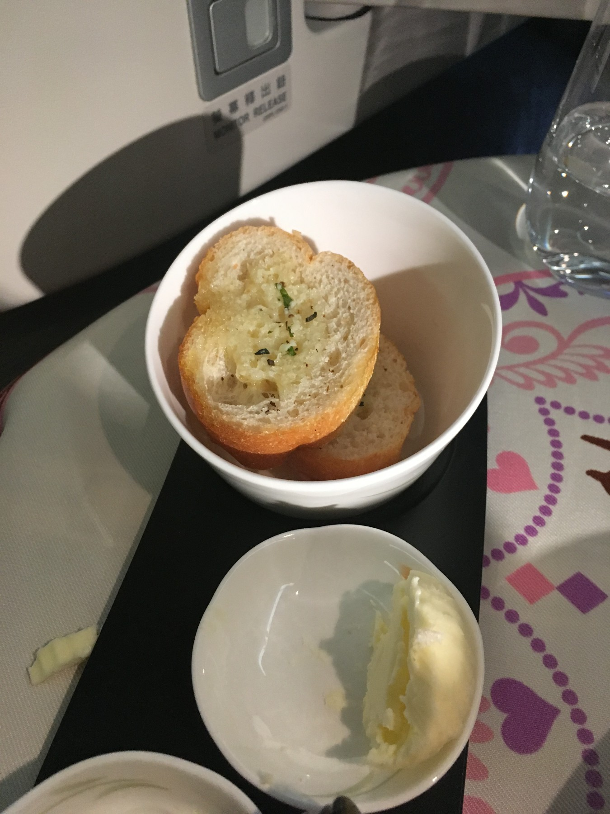

Home - Articles - This article
The Sanrio Characters pillow
EVA Airways is a Taiwan-based airline found by Evergreen group, and a Star Alliance member. They are rated as 5-stars airline by Skytrax for a second consecutive year. Their Chicago route started in November 2016.
The Hello Kitty jet was arranged to the Chicago route three times a week since May 2017. Before that, this aircrafts mainly served Houston as its North American destination. Unfortunately, on the day I was travelling, there was a last-minute equipment change in Taipei, and the aircraft supposed to fly Chicago went to Bangkok instead. The last time similar thing occurred was in late February. It's hard to tell whether it's lucky or not.
Nevertheless, the service items are still Sanrio-branded. Regardless of the aircraft serving the route, these items will be available to announced routes and dates.
The journey starts with Sanrio-branded board at check-in counter. The boarding passes and luggage tags are also branded. I asked the agent whether everything apart from the aircraft itself will have Hello Kitty, and he said yes.
The sign for priority check-in. Note the Sanrio characters below
While there should be a separated security line for business class passengers, it is not used at night. So all passengers have to queue in the same line. It is not extremely long, but definitely not impressive.
EVA Airways uses the Air France-KLM Lounge located near our boarding gate, Gate M7. The gate agent said we are able to board at the end of the lounge directly. This is impressive.
B-16719, the aircraft that will bring me home
This is not the first time I've visited this small lounge, and probably will not be the last time, since it accepts Priority Pass users in selected times as well.
The gate we were using was M7, and for lounge users, there is some sweet spot for this gate. Due to the unique location of the lounge, there is one exit on the end that goes straight to the boarding gate, and we can take advantage of that. Therefore, we were boarding directly from the lounge without going to the general waiting area.
The boarding line in lounge. The gate is on the left of this exit door
After seated, I was greeted and started preparing for the flight. It took a significantly longer time to prepare for everything. During this time, I received the amenity kit (unfortunately not the famous Rimowa since it is no longer supplied for flights to Taipei), asked for the size of pajama and received it, asked for the choice of welcome drink and received it together with a Godiva chocolate, received the menu for flight and got the meals ordered. I also noticed that there are several passengers receiving a Hello Kitty themed tote bag and wasn’t sure about what that was for yet. It turned out to be the preordered duty free items, which I realized after receiving it on my next flight to Shanghai (with a non-Hello Kitty bag). With all these things coming in, it took over 30 minutes to settle down everything. This process usually takes only 5 minutes, or even less in economy class.
The reverse herringbone seat on the aircraft, one of the best in the industry
Welcome drink and chocolate
The pajama that you can bring home
The amenity kit by Georg Jenson, despite not Rimowa, this is still a very good brand
The comfortable headset with noise-cancellation
Slippers are also Hello Kitty themed
Menu for this flight
Taking off from Chicago.
The flight took off fairly on time, and the first meal was served soon after.
EVA Air provides online ordering service, which allows you to order meal ahead of time and get more unique choices. For this flight, I chose the "online special" lobster option
Prelude: Tomato Mozzarella Skewer, Prawn and Cream Cheese with Cucumber

From the Bakery: Assorted Bread served with Butter and Balsamic Vinaigrette
Hors D'oeuvre: Goose Liver Topped with Port Wine Jelly and Grilled Pineapple
Main course: Stir Fried Lobster Meat in XO sauce Served with Steamed Rice and Assorted Vegetables
Sweets: Fruit, Crunchy Chocolate and Black Cherry Tart
The wine list served is one of the best in the industry. EVA Air is bringing wines that usually served in First class into their business class, including the famous Krug Champagne. In fact, the Krug Rose served in this flight is even more expensive than Krug Brut found in those first-class cabins. Unfortunately, according to the menu in IFE, Krug is only served on Hello Kitty flights, and the option will be different in other days.
Krug Rose champagne
The beverages are also very nice. Almost all kinds of juice are tasty, and the tea list is also full of options. The water served is Evian and sparkling water is St’pelle***, those high-level options you could think of.
** Tea
After the meal, I had my mattress prepared, got a bottle of Fiji water, and went to some sleep. One thing I like for these midnight flights is that I can simply follow the normal sleeping time, and it is easier to get a good sleep. I was noticed by my friend that it is possible to see polar light in Canada. I stayed awake for a while and only barely see it. My camera seems to observe lights better, but not sure if this is polar light.
Maybe this is polar light?
Bottled water
Seat mattress for bed
The restroom amenities are by Harnn, and are also Hello Kitty themed. Unfortunately, the toilet paper is no longer Hello Kitty themed.
The Harnn amenities in restrooms
I ordered some light meal during the flight. Most of time, I was sleeping well
Glutinous rice roll with ckicken, prawn, and vegetables
The next time I wake up, it is nearly time for the second meal. I chose the Chinese option with porridge (that you can add if you would like) and other things.
The meal started with a TWG 1837 black tea

Breakfast: Plain congee served with traditional delicatessens egg pancake with asparagus steamed spareribs in black bean sauce
Fill name here
I asked if I can take the menu away, and the answer is yes. I also asked for some other souvenir, and was presented with some playing cards. The other thing you can take with you is the pillow case, which I found exactly the same size as one of my pillows at home.
The Hello Kitty playing cards
Soon afterwards we started descending and arrived in Taipei ahead of time. We taxied to the gate and was soon off the plane after stopped. After the security in transfer areas, I went for the EVA Air lounge, which will be in my next report.
The seat after arrival
The EVA Airways Royal Laurel class is definitely worth it, especially for award trips. It could even be the best business class options over the Pacific. While there are something surprised in this flight (non-Hello Kitty aircraft and the amenity kit), it is still very nice. Hopefully the returning flight from Taipei would have everything I want to see.